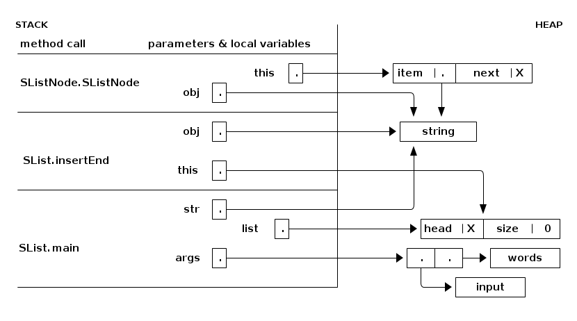
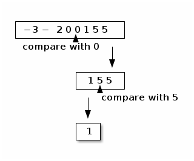
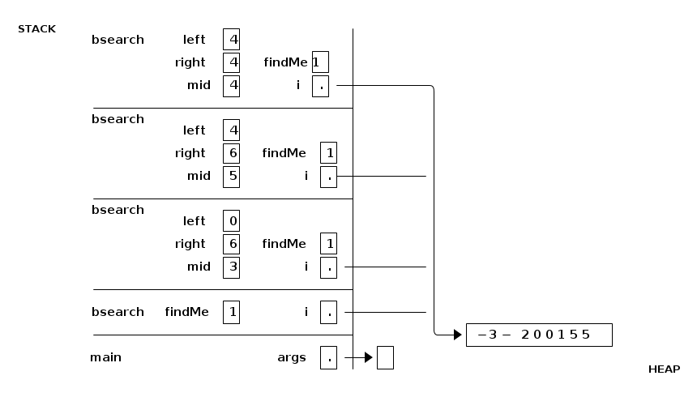

notes9
Table of Contents
Lecture 9. Stack & Heap
Today's reading: Sierra & Bates pp. 77, 235-239, 258-265, 663.
THE STACK AND THE HEAP
Java stores stuff in two separate pools of memory: the stack and the heap.
The heap stores all objects, including all arrays, and all class variables (i.e. those declared "static").
The stack stores all local variables, including all parameters.
When a method is called, the Java Virtual Machine creates a stack frame (also known as an activation record) that stores the parameters and local variables for that method. One method can call another, which can call another, and so on, so the JVM maintains an internal stack of stack frames, with "main" at the bottom, and the most recent method call on top.
Here's a snapshot of the stack while Java is executing the SList.insertEnd method. The stack frames are on the left. Everything on the right half of the page is in the heap. Read the stack from bottom to top, because that's the order in which the stack frames were created.

The method that is currently executing (at any point in time) is the one whose stack frame is on top. All the other stack frames represent methods waiting for the methods above them to return before they can continue executing.
When a method finishes executing, its stack frame is erased from the top of the stack, and its local variables are erased forever.
The java.lang library has a method "Thread.dumpStack" that prints a list of the methods on the stack (but it doesn't print their local variables). This method can be convenient for debugging–for instance, when you're trying to figure out which method called another method with illegal parameters.
Parameter Passing
As in Scheme, Java passes all parameters by value. This means that the method has copies of the actual parameters, and cannot change the originals. The copies reside in the method's stack frame for the method. The method can change these copies, but the original values that were copied are not changed.
In this example, the method doNothing sets its parameter to 2, but it has no effect on the value of the calling method's variable a:
method: | STACK (just before the method returns)
|
static void doNothing(int x) { | -----
x = 2; | x | 2 |
} | ----- stack frame for doNothing
|-----------------------------------------
method call: |
| -----
int a = 1; | a | 1 |
doNothing(a); | ----- stack frame for main
When the method call returns, a is still 1. The doNothing method, as its name suggests, failed to change the value of a or do anything relevant at all.
However, when a parameter is a reference to an object, the reference is copied, but the object is not; the original object is shared. A method can modify an object that one of its parameters points to, and the change will be visible everywhere. Here's an example that shows how a method can make a change to an object that is visible to the calling method:
method: | STACK | HEAP
| set3|
class IntBox { | ----- |
public int i; | ib | .-+----------------\
static void set3(IntBox ib) { | ----- | |
ib.i = 3; | | |
} |--------------------| v
| ----- | ------
method call: | b | .-+------------->|i |3|
| ----- main| ------
IntBox b = new IntBox();
set3(b);
For those of you who are familiar with programming languages that have "pass by reference," the example above is as close as you can get in Java. But it's not "pass by reference." Rather, it's passing a reference by value.
Here's an example of a common programming error, where a method tries and fails to make a change that is visible to the calling method. (Assume we've just executed the example above, so b is set up.)
method: | STACK | HEAP
| badSet4|
class IntBox { | ----- | ------
static void badSet4(IntBox ib) { | ib | .-+------------->|i |4|
ib = new IntBox(); | ----- | ------
ib.i = 4; | |
} |--------------------|
| ----- | ------
method call: | b | .-+------------->|i |3|
| ----- main| ------
badSet4(b);
Binary search
When a method calls itself recursively, the JVM's internal stack holds two or more stack frames connected with that method. Only the top one can be accessed.
Here's a recursive method that searches a sorted array of ints for a particular int. Let i be an array of ints sorted from least to greatest–for instance, {-3, -2, 0, 0, 1, 5, 5}. We want to search the array for the value "findMe". If we find "findMe", we return its array index; otherwise, we return FAILURE.
We could simply check every element of the array, but that would be slow. A better strategy is to check the middle array element first. If findMe is lesser, we know it can only be in the left half of the array; if findMe is greater, we know it can only be in the right half. Hence, we've eliminated half the possibilities with one comparison. We still have half the array to check, so we recursively check the middle element of that half, and so on, cutting the possibilites in half each time. Suppose we search for 1.

The recursion has two base cases.
- If findMe equals the middle element, return its index; in the example above, we return index 4.
- If we try to search a subarray of length zero, the array does not contain "findMe", and we return FAILURE.
public static final int FAILURE = -1; private static int bsearch(int[] i, int left, int right, int findMe) { if (left > right) { return FAILURE; // Base case 2: subarray of size zero. } int mid = (left + right) / 2; // Halfway between left and right. if (findMe == i[mid]) { return mid; // Base case 1: success! } else if (findMe < i[mid]) { return bsearch(i, left, mid - 1, findMe); // Search left half. } else { return bsearch(i, mid + 1, right, findMe); // Search right half. } } public static int bsearch(int[] i, int findMe) { return bsearch(i, 0, i.length - 1, findMe); }
How long does binary search take? Suppose the array has n elements. In one call to bsearch, we eliminate at least half the elements from consideration. Hence, it takes log2 n (the base 2 logarithm of n) bsearch calls to pare down the possibilities to one. Binary search takes time proportional to log2 n. If you're not comfortable with logarithms, please review Goodrich & Tamassia Sections 4.1.2 & 4.1.7.

The stack frames appear at right in the figure above. There are three different local variables named "left" on the stack, three named "right", three named "mid", four named "i", and four named "findMe". While the current invocation of bsearch() is executing, only the topmost copy of "left" is in scope, and likewise for "right" and "mid". The other copies are hidden and cannot be accessed or changed until the current invocation of bsearch() terminates.
Most operating systems give a program enough stack space for a few thousand stack frames. If you use a recursive procedure to walk through a million-node list, Java will try to create a million stack frames, and the stack will run out of space. The result is a run-time error. You should use iteration instead of recursion when the recursion will be very deep.
However, our recursive binary search method does not have this problem. Most modern microprocessors cannot address more than 264 bytes of memory. Even if an array of bytes takes this much space, we will only have to cut the array in half 64 times to run a binary search. There's room on the stack for 64 stack frames, with plenty to spare. In general, recursion to a depth of roughly log n (where n is the number of items in a data structure) is safe, whereas recursion to a depth of roughly n is not.
Unfortunately, binary search can't be used on linked lists. Think about why.
Scope and Recursion
The scope of a variable is the portion of the program that can access the variable. Here are some of Java's scoping rules.
- Local variables and parameters are in scope only inside the method that declares them, and only for the topmost stack frame. Furthermore, a local variable is in scope only from the variable declaration down to the innermost closing brace that encloses it. A local variable declared in the initialization part of a "for" loop is in scope only in the loop body.
- Class variables (static fields) are in scope everywhere in the class, except when shadowed by a local variable or parameter of the same name.
- Fully qualified class variables ("System.out", rather than "out") are in scope everywhere in the class, and cannot be shadowed. If they're public, they're in scope in all classes.
- Instance variables (non-static fields) are in scope in non-static methods of the class, except when shadowed.
- Fully qualified instance variables ("amanda.name", "this.i") are in scope everywhere in the class, and cannot be shadowed. If they're public, they're in scope in all classes.